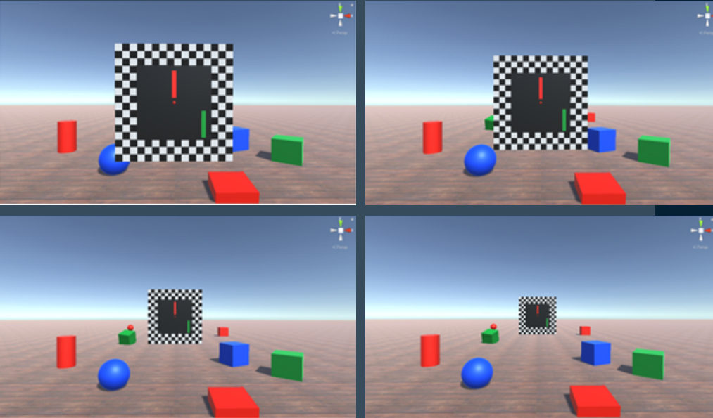

JOSEPH
TRAN
I believe extended reality (XR) has the power to transform healthcare. I build virtual and augmented reality tools for vision science, neuroscience, and medicine.
M.D./Ph.D. Candidate · Integrative Neuroscience · UNR School of MedicineAbout
01 — Background
I'm an M.D./Ph.D. candidate in Integrative Neuroscience at the University of Nevada, Reno School of Medicine, with a B.S. in Computer Science from Stanford University.
My work sits where immersive technology meets medicine: VR vision tests for monitoring astronaut eye health in collaboration with NASA, a VR Disparometer for studying strabismus, AR visualization of scattered radiation in the operating room, and deep learning for glaucoma detection in OCT images.
Outside the lab, I love tinkering with novel technologies to discover innovative use-cases, explore solutions for complex problems, and create fun experiences.
Focus
- XR for healthcare
- Ophthalmology & visual perception
- AI for medical imaging
Skills
- Python, C/C++, C#
- Unity, Lens Studio, Blender
- Git, Google Cloud Platform, Jupyter
Off the clock
- Rock climbing
- Social dance
- Piano
Selected
Projects
02 — XR for Healthcare
VR Vision Suite for Spaceflight
Virtual Reality / Ophthalmology / NASA Collaboration
A suite of VR ophthalmic tests for monitoring eye health in microgravity and studying Spaceflight-Associated Neuro-Ocular Syndrome (SANS).
arrow_outwardCuriosity Kids
Snap Spectacles / Lens Studio / Hackathon Finalist
A child-centered curiosity engine on Snap Spectacles. Finalist (top 4 of 20+ teams) at AWE Reality Hack 2026.
arrow_outward
VR Disparometer
Virtual Reality / C# / Honors Thesis
A VR application that tracks eye movements to understand how people with strabismus perceive stimuli. Stanford CS honors thesis.
arrow_outward
AR X-Ray Visualizer
Augmented Reality / HoloLens / C#
A HoloLens application that visualizes scattered x-ray radiation to improve awareness in interventional suites.
arrow_outwardSelected
Research
Recent publications and presentations in ophthalmology, neuroscience, and population health.
03 — Research
Designing a Virtual-Reality Neuro-Visual Assessment Platform for Spaceflight-Associated Neuro-Ocular Syndrome
Tran J
Speaker presentation, Microgravity to Medicine Symposium, International VR Healthcare Association (IVRHA); Orlando, FL; October 27, 2026
Abstract HUP2: Geographical Trends in Cerebrovascular Disease Mortality in the United States, 1999-2020
Tran J et al. Stroke 56 (Suppl 1), February 2025. American Heart Association.
DOI: 10.1161/str.56.suppl_1.HUP2 open_in_newEvaluating RETFound: A Foundation Model for Glaucoma Detection Using Macular OCT Images
Tran J, Ravindranath R, Chang R, Wang S
Poster presentation, ARVO Annual Meeting; Salt Lake City, UT; May 5, 2025